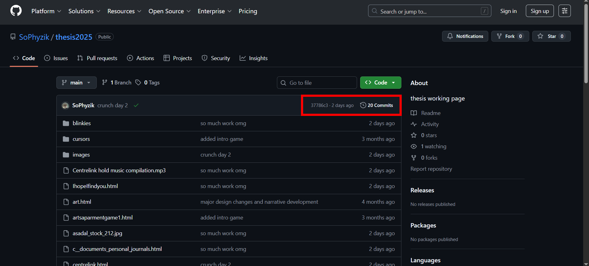

lastliving.html
Dorian Zikic 2025 Creative Writing Thesis
Bridging Statement
For my creative component, I have built a web-based digital narrative via HTML and CSS. This website is hosted on github.com and is fully interactable and functional. This piece, titled lastliving.html is a fragmented, non-linear narrative. The reader is guided through vignettes that are joined via ephemeral Queer connections and as such, resist a chronological sequencing of events. Instead, like Establishing Secure Connection…, lastliving.html is designed to be experienced as a collection of interconnected moments that illustrate a broader experience of isolation, relationality and Queer worldmaking.
Lastliving.html follows Art, who believes that they are the last human being alive. Though much of their life may be familiar to a contemporary reader, through automation and AI, human connection has become impossible. Though there was never an apocalyptic event, Art has no way of reaching other people, and thus, no reason to believe that anyone else exists.
Through my research, I have come to realise the significance of relationality in Queer time. As the internet and digital media redefine Queer relationality in real-time, I return again to phrase “reaching across insurmountable distance”. The authors of the featured missed connections posts, and the satellites of 17776 circle this idea within dramatically different contexts. For Nine, the distance is physical – literally insurmountable distances. For the authors of the posts, the distance is circumstantial – the connection lost because of bad luck, inclement weather or loud music at a venue. Queer temporality is relationality spun through time. Through the act of reaching – which can be done through performance (like Aviance), poetry (Schyler), photography (E.F.P.), or theory (like Munoz himself) – the past, future and present are synthesised into utopia.
Heavily inspired by 17776, I have been reflecting on the Voyager Golden Record. The Voyager Golden Record is in fact two identical disks, both on the twin Voyager spacecraft launched in 1977. The records contain a huge variety of data, including recordings of laughter, folk music, and recordings of the natural world, as well as photographs of humans, natural and manmade structures and scientific diagrams. The goal of these artefacts is to illustrate life on Earth for intergalactic sentient life. However, these disks were created in the 1970s and the data was curated by a team of NASA employees. Looking at the content of the disks, there is a very specific narrative being told about what life on Earth means.
I wanted to explore the idea of the Golden Record through a 21st century lens. Like the satellites of 17776 and the Craigstlist users of Establishing Secure Connection…, Art is reaching for connection, but unable to grasp it directly. As a final effort, Art creates their own version of the Golden Record on their personal webpage, and in doing so, finds a Queer relationality. The concept of radical specificity was introduced to me during research surrounding the Golden Record. Rather than establishing a curated database of information for a future reader, Art attempts to communicate who and what it means to be human through his own experiences and interests.
Notes on Grading
Because there is no existing framework for grading a digital literature artefact, I have had discussions with Maria Turmakin and my supervisors to determine the best way to maintain academic integrity and translate the 7500 word limit.
As per discussion with Dr Elizabeth McFarlane and Maria Turmakin, we have determined that the best wordcount equivalent for this project is approximately 25 webpages to 7500 words. This is based on the labour requirements for developing both HTML and CSS code, in addition to written prose.
Additionally, because the website is a live document, I wanted to provide guidance on how to look at any of the code, if necessary. From the project page on Github, each webpage has an associated HTML file and CSS file (though some pages share CSS). You can look at the files online or download them to your computer. You can also see when the project was last edited, highlighted by the red square below.
You can access the project page via this link, or by copy and pasting the following url into your search engine:
https://github.com/SoPhyzik/thesis2025